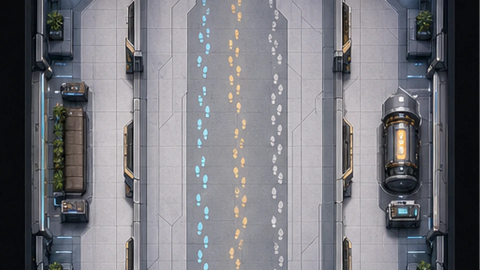
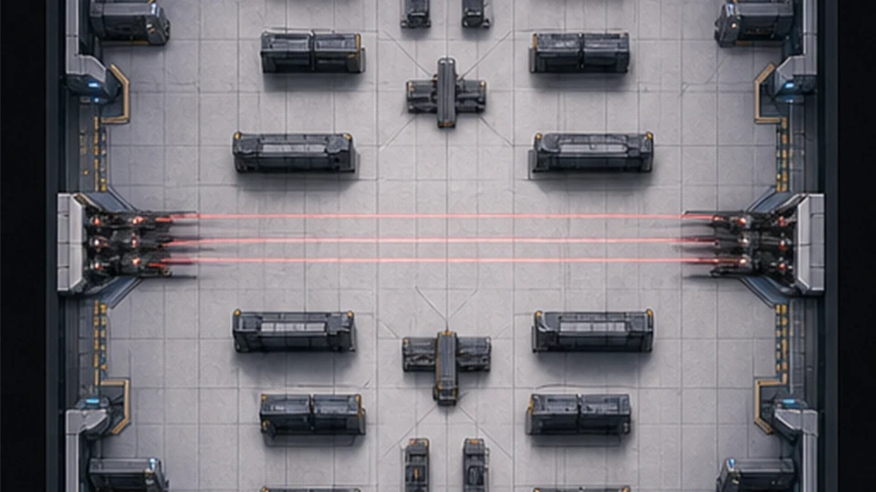
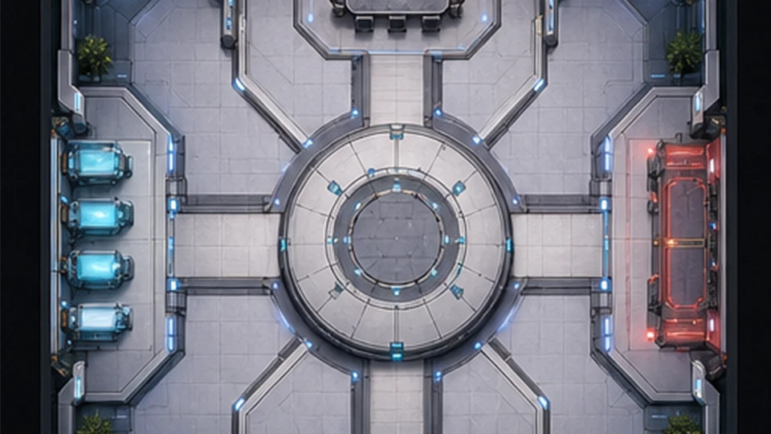
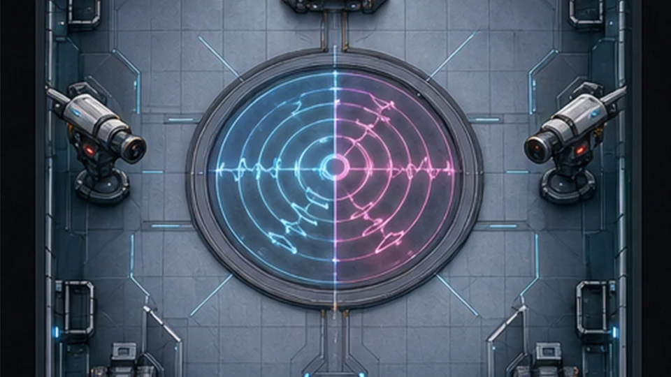

DRILL 01

TACTICAL DOCTRINE
ソロ実戦訓練と仕様表で、基礎規則から数値、相互作用、意思決定まで確認できます。
SOLO DRILLS
0 / 5 完了

DRILL 01

DRILL 02

DRILL 03

DRILL 04
DRILL 05
CPU 01
行動パターン: 自己加速→練気4回→自己加速→練気4回→心臓転移。準備中に接近し、忍殺またはオペ能力でグラビティBotを排除してください。
CPU 02
FOUNDATION
本作の戦闘はすべてテロリスト鎮圧を想定した非実戦の戦術訓練です。オペレーター選択、バトル、会議、次ラウンド、リザルトの順で進行し、キルではなく死体通報またはスマホ緊急会議で会議へ移行します。
全タスク完了、または全アタッカーの追放・排除で勝利します。死亡したディフェンダーの残タスクは自動完了するため、死亡者数だけでタスク勝利は消えません。
生存アタッカー数が生存ディフェンダー数以上になるか、致命的サボタージュが制限時間を迎えると勝利します。人数同数は投票を待たず即時判定です。
ホストから参加順に1人ずつオペレーターを確定します。オペレーターは陣営を問わず選択でき、攻撃判定は原則として敵陣営へ向きます。
既定値は討論0秒・投票300秒、匿名投票オン、追放陣営の即時開示オフ、緊急会議1回です。Botは会議開始時にスキップへ投票します。
MOVEMENT & SOUND
移動方向は斜めを含む8方向です。速度だけでなく、発する音とスタミナ回復停止が位置情報へ直結します。
基準移動速度は抑えめです。通常歩行は小さい足音、ダッシュはスタミナを毎秒42消費して大音量、無音歩行はさらに遅く足音なしです。
自然回復は完全停止中だけ毎秒19。通常上限100、購入・充填で500まで蓄積できます。タスクは200、回避は100を一括消費します。
不足量を毎秒76で回復するため所要時間は残量で変化します。休息中も視覚・聴覚は残りますが、完了まで移動とアクションが不能です。
DownloadとUploadは200SPを消費し、端末の範囲内で停止し続けると自動実行されます。キー操作は不要です。1件につき10Cを獲得し、死亡したディフェンダーの残タスクは完了扱いになります。
二人以上が同じ方向・同じ経路を5秒以上進むと警告後に継続ダメージを受けます。アタッカーはダメージ対象外で、Botは他者が占有する経路を避けて経路探索します。
足音、ダッシュ、銃声、EMPは立体音響で方向が分かります。アタッカーBotは近い足音を優先追跡するため、無音歩行と方向転換で誘導を切れます。
死亡後は壁と障害物の当たり判定を貫通できます。ディフェンダーの未完了タスクは死亡時に全完了し、死体発見まで会議は発生しません。
COMBAT DOCTRINE
HPは2。確殺は残HPに関係なく倒し、ボディ攻撃は累積ダメージでHPを削ります。命中時の虹色粒子は命中確認として扱えます。
通常キルはありません。忍殺、銃器、オペ能力で攻撃します。
対象を1.8秒固定できれば自動発動し、対象が開始位置から4以上動くと失敗します。気概中は非確殺です。
美は確殺を上書き不能の不殺へ、踏ん張りは次に受ける確殺を1回だけボディダメージへ変換します。押し込みは対象の踏ん張りを全無効化し、1回につき使用者へ0.5ダメージを与えます。
全ディフェンダーは100SPで回避を1秒展開します。ファイターが回避に成功した場合は攻撃者をキルします。独立したカウンターキルは存在しません。
ARを初期装備としてHG、SMG、AR、SR、テーザーを切り替え、長押しで連射します。射撃はマナを消費せず、弾切れ時または射撃を止めた後に自動リロードします。テーザーは低威力で、6秒間の移動速度低下だけを付与します。
SRも他銃と同様に長押し連射し、武器相応の低レートで確殺弾を発射します。ウィークバレットは理知中に時間経過で自動装填され、命中対象と射手を破壊します。
同陣営への攻撃は発動者だけが死亡し、対象は無傷です。EMPの誤射だけは発動者へストレージ遮断が反射し、対象には何も起きません。
斬る、キルカウンター、リミットブレイクを統合。一定時間ごとに1MPを自動消費してエネルギーを1回チャージし、1回につき斬るか投擲で使う衝撃波を1発得ます。累計3回ごとに押し込みも得ます。Hのリミットブレイクは発動ごとにHPを1消費し、SPと加速を3倍ずつ重ねます。最終発動から12秒で解除され、発動中はマナを継続消費し、踏ん張りと変わり身を失います。オーバーヒールはアドレナリン受容体を増やして肉体を強固にするため、HPが残る限り連続発動しても肉体は崩壊しません。
重力と時空の相関を扱い、転移、時空加減速、リビテーション、グラビティストームを使用します。重力嵐は継続ダメージ・減速・重力変位を起こし、発動者の半径2mは安全です。
理知中は本人の停止中スタミナ回復を1.75倍にします。ほかのプレイヤーには適用されません。
RESOURCE THEORY
短期戦ではクレジットとスタミナ、長期戦では理知維持時間が勝敗を変えます。固有能力は原則マナ1を消費しますが、ハッカーだけは例外です。
タスク10C、サボタージュ成功8C、全生存者へ10秒ごと2C、キャッシュ15C。キル固定報酬はなく、倒した対象が持つ正のクレジットを全額奪います。
マナは0が欲望、1が気概、2以上が理知。別に、SPは0が欲望、1〜250が気概、251以上が理知です。一度でも欲望になると認知的不協和・確証バイアス・サンクコスト効果・内集団バイアスのいずれかが生じ、その対戦では真・美・善・善のイデアへ到達できません。回復しても進行は再開しません。
理知はゲームを楽しむ知の快楽。気概は勝敗・劣等感・名誉欲の苦痛と、その緩和による偽の快楽。欲望は肉体的欲望の苦痛と、その緩和・利得による偽の快楽です。他責の念が生じた時はプレイを終了してください。
スタミナ消費なし。3.5秒の精神統一中は完全行動不能となり、完了時にマナを1増やします。被攻撃が予想される場所での練気は退路を失います。
SP上限時の回復超過は150SP相当ごとに1MPへ変換されます。MPが2を超え、SPが250未満なら余剰MPを毎秒30SPずつ自動変換します（1MP=150SP）。手動のMP→SP変換はありません。スマホ募金は10C単位で長押し連続実行でき、1回ごとに理知なら幸運／直観+0.05、気概・欲望なら-0.05です。
理知を連続維持して50秒で真または美、2分で残り、3分40秒で善、6分で善のイデア。幸運／直観が0.30を超えるほど進行速度が上がります。2未満へ落ちると次段階の連続維持時間はリセットされます。
踏ん張り、押し込み、変わり身、リビテーション、ハックなど、あらゆるパッシブ能力は理知中だけ発動します。所持回数は失われず、気概・欲望中は休止します。
真の獲得時は次の攻撃対象が持つ踏ん張りをすべて無効化する押し込み、美の獲得時は次の確殺をボディダメージに変える踏ん張りを得ます。善は両方に加え回復、加速、タスク軽減を統合します。善のイデア到達者は翼とともに昇天し特殊勝利します。
スタミナ+100は6C、回避拡張10C、速度+0.1は8C、即時ワープ12C、回復10C、マナポーション+1MPは25C、踏ん張り30C、押し込み45C、変わり身75C、火遁90C。長押しで連続購入できます。
通常オブジェクトから踏ん張り・押し込みは得られません。試合ごとに1地点だけ出現する意志の焦点へ近づくと、踏ん張りか押し込みを1つ獲得し、焦点は消滅します。
80C獲得18%、スタミナ+250が18%、完全活性16%、理知化12%、12秒鈍足14%、15秒能力封印12%、8秒意識消失10%。不利結果の合計は36%です。
固有行動はマナ消費0・クールタイムあり・少量のスタミナ消費です。マナGPUは再使用待機中に毎秒0.025MPを自動消費し、1MPにつき残りクールタイムを20秒短縮します。タスクは時間経過で自動完了し、端末付近では手動完了もできます。HP1以下で確殺無効を持たない絶体絶命時だけroot化し、他オペの全能力を借用します。
INFORMATION WARFARE
通常は他プレイヤーの位置を地図で追えません。音、カメラ、千里眼、サボタージュ反応から間接的に推定します。
障害物を越えて観測焦点を動かし、遠隔地の攻撃やキルを含むマップ全域の現場を直接観測できます。秘密の陣営情報は開示しません。観測中は0.25MP/秒を消費し、画面外への投擲時にも自動発動します。
ディフェンダーは設置カメラを切り替えて視界を取得します。カメラもEMPで破壊可能なため、映像消失そのものが敵の接近情報になります。
開始直後は8秒、使用後は24秒の再充填。被弾者は7秒間ストレージを遮断され、全アイテムを使用できず、踏ん張り・押し込み・変わり身・武器・パソコンなどの効果も停止します。所持品は失われず、解除後に復旧します。人間のオペ能力は封印しません。
900ms以内に重なった同位相EMPは共振し、中心110以内で確殺、260以内でボディダメージ。逆位相は相殺します。同地点の第三者も共振範囲へ巻き込まれます。
アタッカーのみ表示され、開始時と発動後に45秒のクールタイム。成功で8C。遠隔修復はハッカー限定で、300SPを消費し送信完了まで4秒間行動不能。ほかのオペレーターは現地端末で修復します。
拡大マップは部屋名、未完了タスク、自分の現在地を表示します。オブジェクトと他者位置は表示しません。銃声は立体音響で聞こえますが位置情報として公開されません。
DECISION MAKING
会議は確定情報だけでなく、音の方向、死体位置、修復タイミング、消費済み能力を組み合わせて矛盾を評価する場です。
オンライン対戦では外部ボイスチャットによる連携を禁止します。本作はマイク権限を要求せず、ゲーム内テキストチャットだけを使用します。
既定では誰が誰へ投票したか表示されません。最多票が確定した時点、全員が投票済みの時点、またはスキップ票で結果が確定した時点に会議を終了できます。
既定では追放者の陣営を即時開示しません。次ラウンドの人数、行動、勝敗判定から間接的に確かめる必要があります。
ディフェンダーが一試合に一度だけ会議中に指名排除を宣言します。的中なら対象を排除し、キルとして記録されます。会議で外すと発動者が死亡します。戦闘中のキルでは発動しません。
基本スコアはキル数のみです。ルミナスの的中もキル1として加算され、能力使用やタスク完了はスコアに加算されません。リザルトは陣営別に表示します。
即時脅威は致命サボ、人数同数、善のイデア6分到達、破壊兵器、SR射線の順に評価します。幸運／直観による進行加速をカウントダウンで確認してください。会議では位置関係と一部の戦況がリセットされます。
タイトルはPでプレイ、Iで戦術いろは。新規オンラインロビーにはBotが7人自動参加します。BでBot追加、Sで開始、Mでマップ、Tでホスト陣営を操作できます。バトルはWASD、Shiftダッシュ、Ctrl／Alt無音歩行、J長押しで跳躍、Hでオペ能力、K休息、C練気、数字キーで各戦術アクション、Backspaceで退出です。
卑猥・残虐な投稿は他者へ公開せず投稿者を即時退出させ、5回で永久停止します。タイトルから独立した公開チャット機能はありません。